Retrospectives
Retrospectives relate to:
Engineering practices
Methods
Teamwork
Basics
Kinds of retrospectives

Basics
Activities
- Attention
- Relevance
- Confidence
- Satisfaction
Retrospectives
Formula
- warm-up
- data collection
- generating insights
- setting action points
- closing
Warm-up
Regular retrospective subjects
Good, Bad, Change
Warm-up
Regular retrospective subjects
Alternatives
- Worked well, Do it differently
- Stop, Start, Keep Doing
- Smiley, Frowny
- Prouds, Sorries
Warm-up
The goal
Example: Find a way to improve CI.
Warm-up
One word excercise
Everyone says one word about:
- feelings
- expectations
- attitude
- goals
Activities for
Gathering data
|
Short |
Long |
| Facts |
Stickers |
Timeline |
Activities for
Gathering data
|
Short |
Long |
| Feelings |
Questioning |
Team radar |
Gathering data
Sticky notes
How to group sticky notes?
- one person does it
- round-robin
- pairs, fours, eights, ...
Insights
- understand facts
- dig up the most important information
- discover results of potential changes
Insights methods
Small retrospectives: 5 whys
Big retrospectives: Force field analysis
Action Points
SMART
- Specific
- Measurable
- Achievable
- Results-focused
- Time-bound
Action Points
Dotmocracy
Changes should be selected, not ordered
Action Points
The 25-5 rule
By Warren Buffett
Closing thoughts
Appreceation
This activity
- changes the way members relate to each other
- helps avoiding fights
First retrospective ever
New team
Flight checklist
- talk with leaders for support
- talk with team members
- know the context (company and team)
Project retrospective
- do a survey (instead of talking)
- prepare a place and materials
- everything takes more time
- plan for the whole day meeting